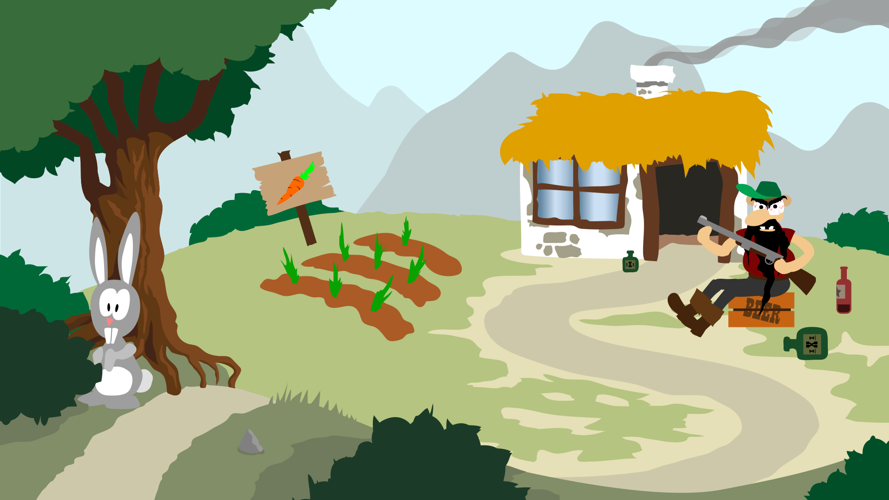

Kaninen & jægeren
Begået af: Erik Christian Røhl Granberg

Link til animationsside:
http://www.erik-crg.dk/kea/02-animation/02_01_animationsprojekt/animation.html
Link til styletile (pdf):
http://www.erik-crg.dk/kea/02-animation/02_01_animationsprojekt/02_01_04_scene_og_styletile_erik_granberg.pdf
Link til Github
https://github.com/erik8036granberg/animation-github
Link til frameanimation af kanin
http://www.erik-crg.dk/kea/02-animation/02_01_animationsprojekt/frame-animation.html